arXiv 2503.14734 · cs.RO · v2 2025 年 3 月 27 日 · NVIDIA 白皮书 · 中文精读
GR00T N1: An Open Foundation Model for Generalist Humanoid Robots
作者署名 NVIDIA；附录 A 列出核心贡献者（研究负责人 Linxi “Jim” Fan、Yuke Zhu）和其他贡献者。
关于这份精读。这篇论文在 arXiv 上登记的许可是 CC BY 4.0，但 PDF 每页页脚印着“© 2025 NVIDIA. All rights reserved.”，两者矛盾（同 SONIC 页的情况，见读者注 1）。这一批论文由站点作者决定放原图：下面 14 张图从 arXiv PDF（v2）裁切，只做了裁切、缩放和格式转换，没有改内容，版权归原作者，每张图注写明出处和看原图链接。
按原文顺序覆盖第 1 到 6 节和附录 A 到 F，小节编号和原文一致，用自己的话整理，不逐字翻译。原文只给式 (1) 编号，其余公式标“无编号”。表格数字照录原文；长表放进折叠块。“读者注”是我核算或对照时发现的，不属于论文内容，页尾有汇总。
代码。NVIDIA/Isaac-GR00T（Apache-2.0）读了五个版本，只读没有运行：N1 用标签 n1-release（提交 755876a，2025-06-10），N1.5 用 n1.5-release（4af2b62，2025-11-05），N1.6 用 n1.6-release（ead5283，2026-04-14），N1.7 用 n1.7-release（23ace64，2026-04-17）和当前 main（3b49067，2026-11-10）。权重许可不同：N1、N1.5、N1.6 的 HF 模型卡写 NVIDIA 单向非商业许可，N1.7 写 NVIDIA Open Model License（可商用）。参数量用 HF 上 safetensors 的文件头逐项数（只下载文件头，没下载权重）。公开代码只有微调和推理，没有预训练、LAPA、IDM、视频生成和检测损失的训练代码，这些只能和论文对字面。
本页的位置。OpenWAM 的 RoboCasa-GR1 基准就是本文 §4.1 的“GR-1 桌面任务”，GR00T 各版本也是 OpenWAM 表里的 VLA 基线。所以逐节精读之后加了两节：N1.5 / N1.6 / N1.7 的变化（没有正式论文，依据 README、模型卡和博客）和和 OpenWAM 的关系。
arXiv 摘要页（2503.14734，v1 2025-03-18、v2 2025-03-27）登记的许可是 CC BY 4.0；PDF（v2）每页页脚印着“© 2025 NVIDIA. All rights reserved.”。这和 SONIC、GraspGen 两页遇到的情况一样（那两篇是 CC BY-SA 加 NVIDIA 版权声明）。本页按这一批的决定放原图，图注同时写明两种说法。
GR00T N1 是 NVIDIA 发布的人形机器人 VLA（视觉-语言-动作）模型。它把模型分成两半：System 2 是一个预训练的视觉语言模型 Eagle-2，负责“看懂场景和指令”；System 1 是一个用流匹配训练的扩散 Transformer（DiT），通过交叉注意力读 System 2 的输出，生成一段 16 步的连续动作。两半一起端到端训练。不同机器人的状态和动作维度不同，用每种具身各自的小 MLP 投影到共享空间。
读完我认为最值得记住的三点：
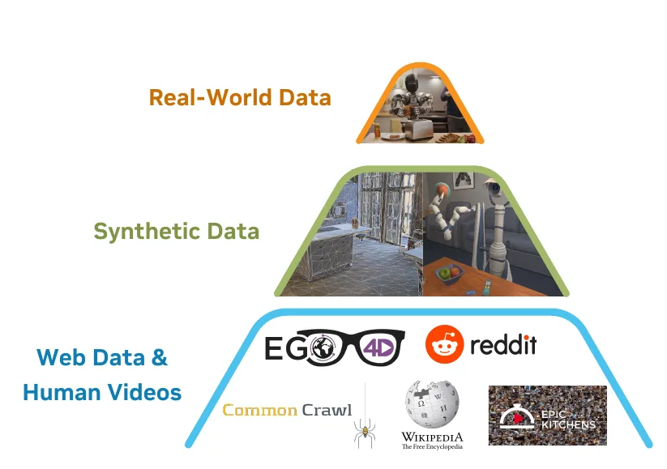
作者主张通用机器人要“全栈”解决三件事：硬件（人形的身体和人类环境最匹配）、模型（要能处理开放的任务）、数据（人形真机数据太贵）。基础模型在文本和图像上已经证明了“大数据预训练 + 快速适配”的路线，但机器人没有“互联网规模的人形数据”，各家机器人的本体、传感器、自由度和控制方式都不同，数据像一个个“孤岛”。
GR00T N1 的回应：
正文给的数：VLM 10 Hz，动作 120 Hz，采样一段 16 步动作 63.9 ms（§2）。16 / 0.0639 s ≈ 250 步/秒，所以 120 Hz 不是推理吞吐的直接换算。公开代码（n1-release 的 gr00t/model/gr00t_n1.py 的 get_action）每次调用先跑一遍 backbone、再跑动作头，没有“VLM 慢、DiT 快”的两套频率，也没有缓存 VLM 特征复用的逻辑。GR-1 遥操作数据是 20 Hz（§3.1），16 步动作块对应 0.8 秒。120 Hz 怎么来的（例如下游控制器插值）论文没说，未核实。
结构：视觉语言骨干编码图像和语言，DiT 流匹配策略输出高频动作。骨干是 NVIDIA 的 Eagle-2 VLM。GR00T-N1-2B 总共 2.2B 参数，VLM 占 1.34B。作者列了三个特点：VLM 推理模块和 DiT 动作模块组合在一个统一的学习框架里；用人类视频、仿真和神经生成数据、真机示范的混合做预训练；训练一个大规模多任务、语言条件、支持多种具身的策略，能用少量数据快速后训练。
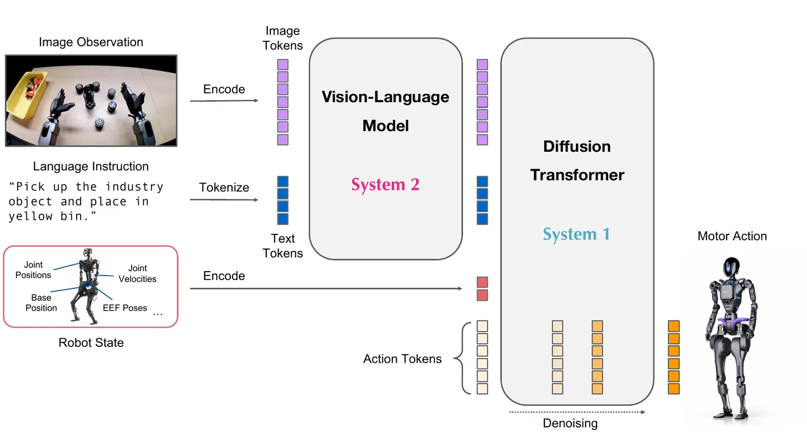
HF 上 nvidia/GR00T-N1-2B 的 model.safetensors 文件头（全部 bf16）合计 2,190,019,826 个参数。分项：
mlp1，输入 4608 = 4 × 1152）13,644,800 + 投影层 2048 → 1536（backbone.linear）3,147,264 = 1,335,279,856，四舍五入 1.34B。不算投影层是 1.33B，所以论文的 1.34B 包括这层。decode_layer（3,074，见读者注 17）。max_num_embodiments = 32）：每个槽位动作编码器 7,131,648、状态编码器 1,640,960、解码器 1,082,400，合计 9,855,008；32 个槽位共 3.15 亿，占总数 14%。按代码，GR-1 用第 24 号槽位，新具身微调用第 31 号（gr00t/model/transforms.py 的 _EMBODIMENT_TAG_MAPPING），其余槽位推理时不参与计算。动作用流匹配学习。DiT 处理本体状态和带噪动作，并与 Eagle-2 输出的图像和文本 token 做交叉注意力，输出去噪后的动作（图 3）。
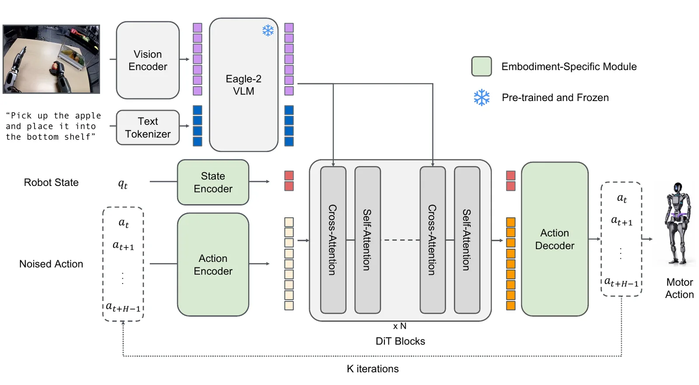
图 3 给整个 Eagle-2 VLM 画了雪花“Pre-trained and Frozen”。但 §2.3 和表 6 说预训练和后训练都只冻结语言部分，视觉编码器是训练的（表 6：vision encoder unfrozen，text tokenizer frozen）。权重配置也是 tune_llm: false, tune_visual: true；N1 微调脚本 scripts/gr00t_finetune.py 默认 tune_visual = True。“整个 VLM 冻结”是 N1.5 才改的（见后），图 3 的画法和 N1 的实际设定不符。
不同具身的状态和动作维度不同，每个具身用一个 MLP 把它们投影到共享的嵌入维度，再送进 DiT。仿照 π0，动作编码器同时编码扩散时间步和带噪动作向量。
动作按块处理：任一时刻 \(t\)，模型处理 \(A_t=[a_t,a_{t+1},\dots,a_{t+H-1}]\)，即第 \(t\) 到 \(t+H-1\) 步的动作向量，\(H=16\)。
Eagle-2 由 SmolLM2 语言模型和 SigLIP-2 图像编码器微调而成，在大量视觉语言任务上对齐过。图像以 224 × 224 编码，经过 pixel shuffle，每帧得到 64 个图像 token；然后和文本一起进 LLM。训练策略时，任务描述和（可能多张）图像按 VLM 训练时的对话格式输入，取 LLM 的特征（batch × 序列长 × 隐藏维）。作者发现用中间层而不是最后一层的特征，推理更快、下游成功率也更高；GR00T-N1-2B 用第 12 层。
gr00t/model/backbone/eagle_backbone.py：while len(layers) > select_layer: layers.pop(-1)，select_layer = 12，再把 lm_head 换成恒等，取最后一个 hidden state。所以检查点里只存了 12 层语言模型（文件头只有第 0 到 11 层），推理也只算 12 层，这就是“更快”的来源。
64 个 token：SigLIP 的 patch 是 14，224 / 14 = 16，16 × 16 = 256 个 patch；pixel shuffle 把 2 × 2 个相邻 patch 拼成一个，256 / 4 = 64，通道 1152 × 4 = 4608，正好是 mlp1 第一层的输入维度。配置里 num_image_token: 64、max_input_tiles: 1（不切块）。VLM 输出 2048 维，经 backbone.linear 投影到 1536 维再给 DiT。
动作模型 \(V_\theta\) 是 DiT 的一个变体：用自适应 LayerNorm（adaLN）注入去噪步。它由交替的交叉注意力块和自注意力块组成（类似 Flamingo 和 VIMA）：自注意力块处理带噪动作 token \(A_t^\tau\) 和状态嵌入 \(q_t\)；交叉注意力块以 VLM 输出的视觉语言 token \(\varphi_t\) 为条件。最后一个 DiT 块之后，用具身专用的动作解码器（另一个 MLP）处理最后 \(H\) 个 token，得到动作。
给定真实动作块 \(A_t\)、流匹配时间 \(\tau\in[0,1]\)、噪声 \(\epsilon\sim\mathcal N(0,I)\)，带噪动作块为 \(A_t^\tau=\tau A_t+(1-\tau)\epsilon\)。模型预测 \(V_\theta(\varphi_t,A_t^\tau,q_t)\) 去逼近去噪向量场 \(\epsilon-A_t\)，损失是
和 π0 一样，时间的分布取
推理时 \(K\) 步去噪：先采 \(A_t^0\sim\mathcal N(0,I)\)，再用前向 Euler 迭代
实践中 \(K=4\) 对所有具身都够用。
按 \(A_t^\tau=\tau A_t+(1-\tau)\epsilon\)，\(\tau=0\) 是纯噪声、\(\tau=1\) 是数据，沿 \(\tau\) 增大的速度是 \(\mathrm dA^\tau/\mathrm d\tau=A_t-\epsilon\)。论文让网络逼近 \(\epsilon-A_t\)，又用“\(+\frac1K V\)”从 \(\tau=0\) 往 \(\tau=1\) 积分，两者一起用会把样本推离数据。代码 flow_matching_action_head.py：noisy_trajectory = (1 - t) * noise + t * actions，velocity = actions - noise，推理 actions = actions + dt * pred_velocity，方向一致。所以是论文式 (1) 的笔误。
时间分布。代码先抽 \(x\sim\mathrm{Beta}(1.5,1)\)，再令 \(\tau=(s-x)/s\)，和论文的式子等价。\(x\) 的密度 \(\propto x^{0.5}\) 偏向 1，所以 \(\tau\) 偏向 0（噪声端）：\(\mathbb E[x]=0.6\)，\(\mathbb E[\tau]=(0.999-0.6)/0.999=0.399\)。\(\tau\) 的取值范围是 \([-0.001,1]\)，\(s\) 让它碰不到恰好 1（无噪声）。训练时 \(\tau\) 乘 1000 取整成 1000 个桶再送进时间步编码。
HF 上 GR00T-N1-2B 的 config.json 是 num_inference_timesteps: 16。但 n1-release 的 scripts/inference_service.py 和 scripts/eval_policy.py 都有 --denoising_steps 参数，默认 4，传进 Gr00tPolicy 覆盖配置。按代码，4 步的时间点是 \(\tau=0,\,0.25,\,0.5,\,0.75\)（桶号 0、250、500、750），步长 0.25，最后一步之后到达 \(\tau=1\)。直接 from_pretrained 不传参数会跑 16 步。
自己画的 · 11 幕 3D 框架动画
从数据到部署拆成 11 幕：双系统总览、数据金字塔（表 7 当场加总）、潜在动作 LAPA、神经轨迹和 IDM、仿真轨迹、System 2 的 token 流、具身编解码槽位（当场算参数量）、DiT 的交替注意力、流匹配训练（可切换论文写法和代码写法）、K 步推理、结果和版本演进。下面嵌的是第 8 幕。
金字塔的底层是公开的人类第一视角视频和 VLM 预训练用的网页数据。中层：用预训练的视频生成模型生成合成神经轨迹，把内部遥操作数据从 88 小时扩到 827 小时（约 10 倍），换上新的语言指令，得到大量“反事实”轨迹（图 5）；另外生成大量仿真轨迹。顶层是真机遥操作。下面依次讲潜在动作、神经轨迹和仿真轨迹，以及各自怎么得到动作。
人类视频和神经轨迹没有动作。作者按 LAPA（Ye 等，2025）训练一个 VQ-VAE：编码器读当前帧 \(x_t\) 和固定窗口 \(H\) 之后的帧 \(x_{t+H}\)，输出潜在动作 \(z_t\)；解码器读 \(z_t\) 和 \(x_t\)，重建 \(x_{t+H}\)。编码器输出的连续向量被映射到码本里最近的条目。训练完后把编码器当逆动力学模型用：给一对 \(x_t,x_{t+H}\)，取量化前的连续嵌入当潜在动作标签，用同样的流匹配损失训练，并把它当成一个单独的“LAPA”具身。VQ-VAE 在所有异构数据上一起训练，所有数据共享同一个潜在动作空间，可能有助于跨具身泛化。图 4 是 8 种具身（含人类）里检索到的相似潜在动作。
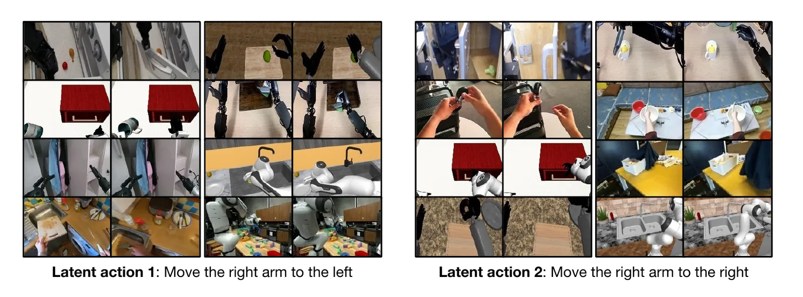
机器人数据量随人工线性增长。作者在全部 88 小时内部遥操作数据上微调图生视频模型，给定已有的初始帧和新的语言提示，生成 827 小时视频。为了多样性，先用一个商用多模态大模型从初始帧里识别物体，生成大量“把 {物体} 从 {位置 A} 拿到 {位置 B}”的组合，并要求只保留物理上可行的；生成后再用多模态大模型当裁判，读下采样的 8 帧，过滤掉没按指令做的视频，再重新写描述（细节见附录 F）。
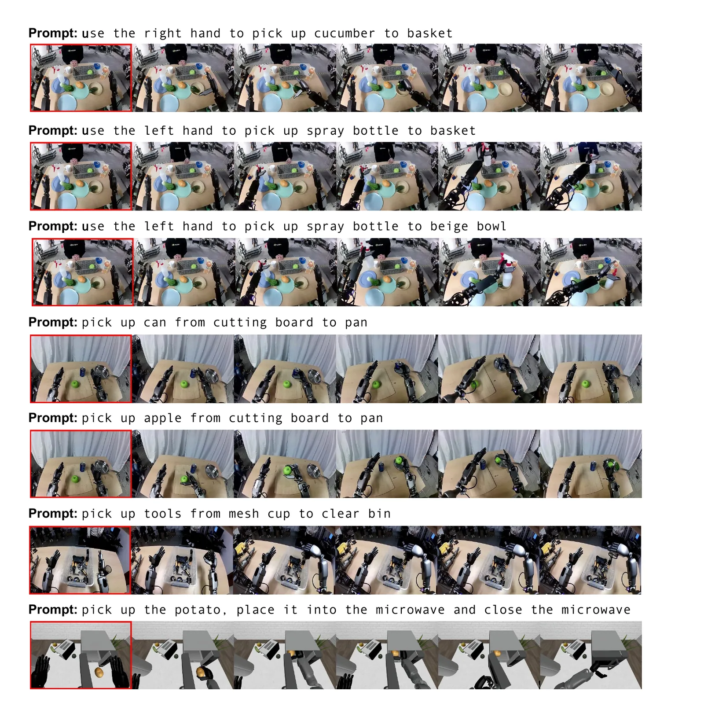
人形同时控制双臂和灵巧手，真机采数特别贵。作者用 DexMimicGen 自动扩增：任务分解为以物体为中心的子任务，把少量人类示范切成段，每段按物体新位置变换（保持末端和物体的相对位姿），段与段之间插值，逐步执行，最后检查成功，只保留成功的轨迹。预训练加后训练共生成 78 万条仿真轨迹，相当于 6,500 小时（连续 9 个月）的人类示范，只用了 11 小时。
6,500 小时 ÷ 78 万条 = 平均每条 30 秒；“9 个月”= 9 × 30 × 24 = 6,480 小时，对得上。§3.2 说预训练是 54 种容器组合 × 每种 1 万条 = 54 万条，表 7 的仿真预训练是 1,742.6 小时，即每条平均 11.6 秒。那么其余 24 万条（后训练）要占 6,500 − 1,742.6 = 4,757 小时，每条 71 秒；而后训练的仿真集是 DexMG 9 × 1000 和 GR-1 24 × 1000（§4.1），只有 3.3 万条，和 24 万条也对不上。78 万和 6,500 小时的口径未核实。
预训练。在各种具身和数据源上用式 (1) 训练。人类视频只用潜在动作当目标；GR-1 人形数据、Open X-Embodiment 等机器人数据同时用真实动作和潜在动作当目标；神经轨迹同时用潜在动作和一个在真机数据上训练的 IDM 预测的动作。超参见表 6。
后训练。在单一具身的数据上微调。和预训练一样，冻结 VL 骨干的语言部分，其余全部微调。
用神经轨迹做后训练。为缓解后训练数据少，给每个下游任务也生成神经轨迹。多视角的任务把多个视角拼成网格让视频模型一起生成（图 13）。仿真任务从随机初始化的环境里收集初始帧；真机任务手工摆物体、录初始观测（也可以用 img2img 扩散自动造初始帧，留作以后）。为贴近“遥操作数据有限”的现实，视频模型只在仿真任务的人类采集轨迹、以及真机基准后训练数据的 10% 上微调；低数据设定下 IDM 也只用这部分数据训练。生成视频没有动作，用潜在动作或 IDM 动作当伪标签，当作另一个具身训练。后训练时真实轨迹和神经轨迹按 1 : 1 采样。
基础设施。NVIDIA OSMO 调度的 H100 集群，Quantum-2 InfiniBand 胖树互连，基于 Ray 的容错多机训练和数据读取。单个模型最多 1024 张 GPU；GR00T-N1-2B 预训练约 5 万 H100 GPU 小时。单张 A6000 微调：只调适配层（状态、动作编码器和动作解码器）和 DiT 时 batch 最大 200，连视觉编码器一起调时最大 16。
表 6：batch 16,384 × 20 万步 = 32.8 亿个样本。5 万 GPU 小时 ÷ 1024 张卡 = 48.8 小时，约两天。表 7 的预训练数据共 5.93 亿帧，所以按帧算约 5.5 个 epoch（不同数据源的采样权重论文没给，实际每个源的 epoch 数不同，未核实）。
预训练语料分三类：真机数据（§3.1，塔顶）、合成数据（§3.2，中层，含仿真和神经轨迹）、人类视频（§3.3，塔底）。表 1 是哪类数据用了哪种生成方法，完整统计在表 7。
| 表 1 · 数据生成方法 | 潜在动作 | 神经轨迹 | 仿真轨迹 |
|---|---|---|---|
| 真机数据集 | ✓ | ✓ | ✓ |
| 仿真机器人数据集 | ✓ | ✓ | |
| 人类视频数据集 | ✓ |
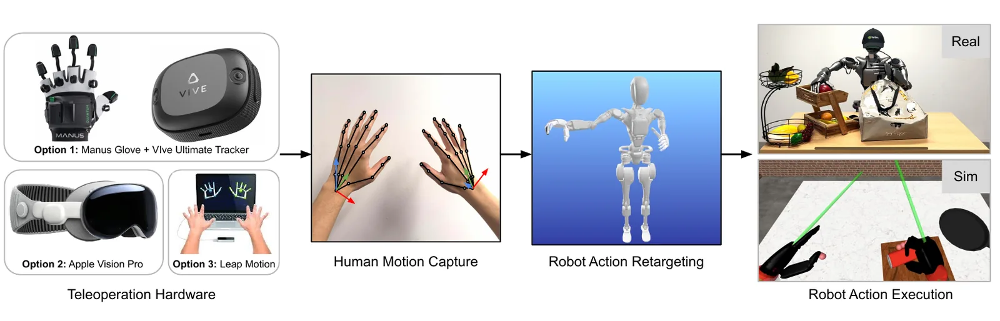
仿真轨迹。在 RoboCasa（论文）框架里搭人形桌面重排任务，形式是“把 A 从 B 移到 C”，B、C 是盘子、篮子、餐垫、架子等容器；共 54 种来源-目标容器组合，物体和容器位置随机，另放干扰物，迫使模型看语言。先用 Leap Motion 遥操作采几十条源示范，重定向后交给基于 mink 的全身 IK 控制器；再用 DexMimicGen（论文）每种组合生成 1 万条，共 54 万条。
神经轨迹。在 GR00T N1 人形预训练集上微调开源图生视频模型，训练 100 个 epoch，数据是 3,000 条带语言标注的真机样本，每条 480P、81 帧。模型能对新提示生成反事实轨迹，对没见过的初始帧、物体和动作也有泛化。生成视频再打潜在动作和 IDM 伪动作。共约 827 小时；在 L40 上生成 1 秒视频要 2 分钟，总计约 10.5 万 L40 GPU 小时，用 3,600 张 L40 约 1.5 天。
827 小时 × 3600 秒 × 每秒 2 分钟 = 827 × 120 = 99,240 GPU 小时，和“约 10.5 万”接近（差 6%）。10.5 万 ÷ 3,600 张 = 29.2 小时 ≈ 1.2 天，比“约 1.5 天”略短，可能含调度开销，未核实。
表 7 的神经视频是 2,380 万帧、8 FPS：2,380 万 ÷ 8 ÷ 3600 = 826.4 小时，和 827.3 对上。81 帧 ÷ 8 FPS = 10.1 秒；§5 说约 30 万条神经轨迹，827.3 小时 ÷ 30 万 = 9.9 秒每条，也对上。所以一条神经轨迹就是一段 81 帧的生成视频。
人类视频没有动作标签，但有大量人与物体交互，覆盖抓取、工具使用、做饭、组装等，多为第一视角（图 14）。用了七个：Ego4D（论文，日常活动第一视角）、Ego-Exo4D（论文，加第三视角）、Assembly-101（论文，分步组装）、EPIC-KITCHENS（论文，厨房）、HOI4D（论文，逐帧分割、手和物体位姿）、HoloAssist（论文，AR 环境里的协作任务）、RH20T-Human（论文，精细操作）。
| 数据集 | 帧数 | 时长（小时） | FPS | 视角 | 类别 |
|---|---|---|---|---|---|
| GR-1 遥操作预训练 | 6.4M | 88.4 | 20 | 第一视角 | 真机 |
| DROID (OXE) | 23.1M | 428.3 | 15 | 左、右、腕 | 真机 |
| RT-1 (OXE) | 3.7M | 338.4 | 3 | 第一视角 | 真机 |
| Language Table (OXE) | 7.0M | 195.7 | 10 | 正前 | 真机 |
| Bridge-v2 (OXE) | 2.0M | 111.1 | 5 | 肩、左、右、腕 | 真机 |
| MUTEX (OXE) | 362K | 5.0 | 20 | 腕 | 真机 |
| Plex (OXE) | 77K | 1.1 | 20 | 腕 | 真机 |
| RoboSet (OXE) | 1.4M | 78.9 | 5 | 左、右、腕 | 真机 |
| Agibot-Alpha | 213.8M | 1,979.4 | 30 | 第一视角、左、右 | 真机 |
| RH20T-Robot | 4.5M | 62.5 | 20 | 腕 | 真机 |
| Ego4D | 154.4M | 2,144.7 | 20 | 第一视角 | 人类 |
| Ego-Exo4D | 8.9M | 123.0 | 30 | 第一视角 | 人类 |
| Assembly-101 | 1.4M | 19.3 | 20 | 第一视角 | 人类 |
| HOI4D | 892K | 12.4 | 20 | 第一视角 | 人类 |
| HoloAssist | 12.2M | 169.6 | 20 | 第一视角 | 人类 |
| RH20T-Human | 1.2M | 16.3 | 20 | 第一视角 | 人类 |
| EPIC-KITCHENS | 2.3M | 31.7 | 20 | 第一视角 | 人类 |
| GR-1 仿真预训练 | 125.5M | 1,742.6 | 20 | 第一视角 | 仿真 |
| GR-1 神经视频 | 23.8M | 827.3 | 8 | 第一视角 | 神经生成 |
| 真机合计 | 262.3M | 3,288.8 | – | – | – |
| 人类合计 | 181.3M | 2,517.0 | – | – | – |
| 仿真合计 | 125.5M | 1,742.6 | – | – | – |
| 神经合计 | 23.8M | 827.3 | – | – | – |
| 总计 | 592.9M | 8,375.7 | – | – | – |
逐行加：真机 262.339M 帧、3,288.8 小时；人类 181.292M、2,517.0 小时；总计 592.931M、8,375.7 小时，和表里的合计一致。再用“帧数 ÷ FPS ÷ 3600”核每行时长：其他行误差都在 3% 以内（GR-1 遥操作 6.4M ÷ 20 = 88.9 对 88.4，是 6.4M 取整造成的），只有 Ego-Exo4D 是 8.9M ÷ 30 = 82.4 小时，而表里写 123.0；按 20 FPS 算是 123.6，所以它的 FPS 列可能应为 20，未核实。
按时长，人类视频占 30%，仿真 21%，神经视频 10%，真机 39%；真机里 AgiBot-Alpha 一家就占 60%（1,979.4 / 3,288.8）。GR-1 自己的遥操作只有 88.4 小时，占总量 1.1%。
三个仿真基准评跨具身和多任务，真机在 GR-1 上做桌面操作，重点看少量示范能学到多少。
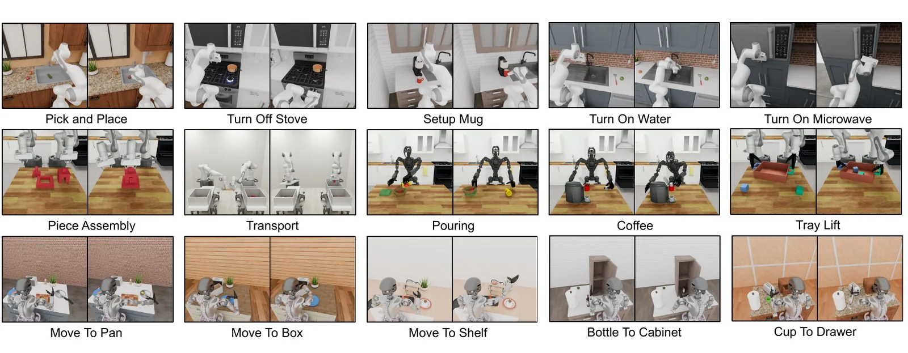
四类桌面任务（图 8）：
每个任务人工采集 15 分钟到 3 小时不等的数据，去掉低质量轨迹。
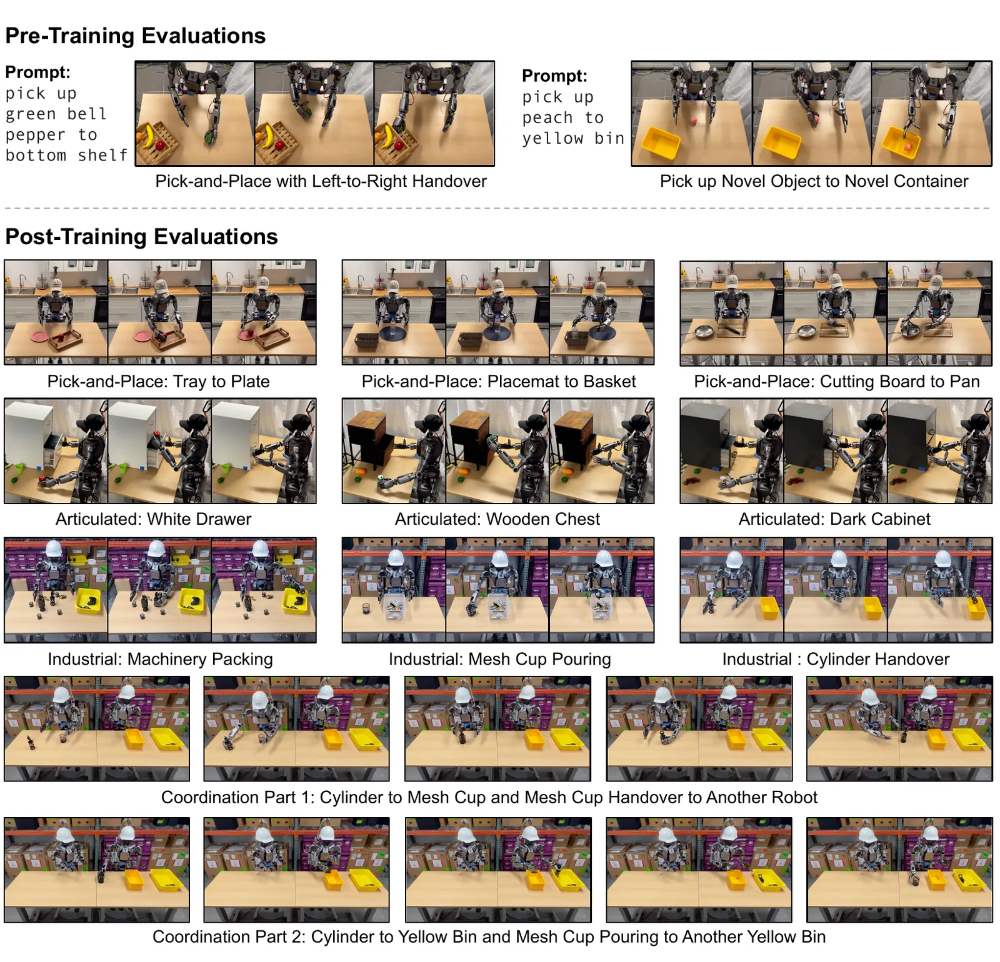
在数据受限的设定下后训练 GR00T N1 和基线，评成功率。默认全局 batch 1024、训练 6 万步；DexMG 每种具身任务少、数据少，GR00T-N1-2B 用 batch 128。
基线。BC-Transformer（RoboMimic 里的 Transformer 行为克隆，GMM 输出，输入 10 帧观测、预测 10 步动作）和 Diffusion Policy（U-Net 去噪，输入 1 帧、一次输出 16 步）。两者都从头训练。
评测协议。仿真：每 500 步存一个检查点，取最后 5 个检查点里最好的那个的 100 次平均成功率（沿用 RoboCasa 协议）。真机：部分得分制，每任务 10 次取平均；机械零件装箱例外，按 30 秒内放进箱子的零件数（共 5 个）算，只做 5 次。低数据设定：每任务只用 10% 的数据。
预训练模型直接评测。在真机 GR-1 上设计两个任务：物体放在左手左边、指令是放到底层架子，需要左手抓、交给右手、再放（协调）；把新物体放进没见过的容器（新物体）。每个任务 5 个物体 × 3 次。GR00T-N1-2B 分别得 76.6%（11.5/15）和 73.3%（11/15），0.5 表示抓对但没放进去。
11.5 / 15 = 76.67%，四舍五入应为 76.7%，论文截断成 76.6%。11 / 15 = 73.33%，没问题。
后训练，仿真。每个基准分别用每任务 30、100、300 条示范后训练（RoboCasa 24、DexMG 9、GR-1 24 个任务）。GR00T N1 在所有基准和数据量上都超过从头训练的基线，完整结果在附录 B（表 4、图 10）。
| 表 2 · 仿真结果（每任务 100 条） | RoboCasa | DexMG | GR-1 | 平均 |
|---|---|---|---|---|
| BC Transformer | 26.3% | 53.9% | 16.1% | 26.4% |
| Diffusion Policy | 25.6% | 56.1% | 32.7% | 33.4% |
| GR00T-N1-2B | 32.1% | 66.5% | 50.0% | 45.0% |
表 4 里 DexMG 9 个任务 100 条示范的逐项平均：Diffusion Policy 46.87，GR00T 58.50，和表 4 自己的“DexMG Average”行（46.9、58.5）以及图 10 的柱顶数一致。但表 2 写的是 56.1 和 66.5，各高 9 和 8 个点。RoboCasa（25.6、32.1）和 GR-1（32.7、50.0）两列和表 4 一致。
表 2 的“平均”是按任务数加权（24 / 9 / 24，共 57 个任务）：BC (26.3 × 24 + 53.9 × 9 + 16.1 × 24) / 57 = 26.36，DP 33.41，GR00T 45.07，和表里的 26.4、33.4、45.0 对上（45.07 按四舍五入应为 45.1）。如果把 DexMG 换成表 4 的数，平均是 DP 31.95、GR00T 43.81。哪组 DexMG 数是对的，论文没说明，未核实。图注“GR-1 上领先超过 17%”：50.0 − 32.7 = 17.3，对。
后训练，真机。GR00T-N1-2B 对比 Diffusion Policy，分别用 10% 和全部遥操作数据（表 3、图 9）。GR00T 在 10% 数据下领先 32.4 个点，全数据领先 30.4；只用 10% 数据比 Diffusion Policy 用全数据只低 3.8。
| 表 3 · 真机结果 | 抓放 | 铰接 | 工业 | 协作 | 平均 |
|---|---|---|---|---|---|
| Diffusion Policy（10%） | 3.0% | 14.3% | 6.7% | 27.5% | 10.2% |
| Diffusion Policy（全部） | 36.0% | 38.6% | 61.0% | 62.5% | 46.4% |
| GR00T-N1-2B（10%） | 35.0% | 62.0% | 31.0% | 50.0% | 42.6% |
| GR00T-N1-2B（全部） | 82.0% | 70.9% | 70.0% | 82.5% | 76.8% |
文中的差值都对：42.6 − 10.2 = 32.4，76.8 − 46.4 = 30.4，46.4 − 42.6 = 3.8。“平均”列既不是四个类别的平均（四列平均是 12.9、49.5、44.5、76.4），也不是表 5 里 18 行的平均（8.2、43.5、40.5、78.2）。按 13 个任务算对上了：抓放 5 个任务（每个取见过/没见过两行的平均），加铰接 3、工业 3、协作 2，即 (5 × 抓放 + 3 × 铰接 + 3 × 工业 + 2 × 协作) / 13 = 10.23、46.45、42.61、76.76。表 3 各类别数也能从表 5 复算（例如 GR00T 10% 的铰接 (26.4 + 86.6 + 72.9) / 3 = 61.97）。
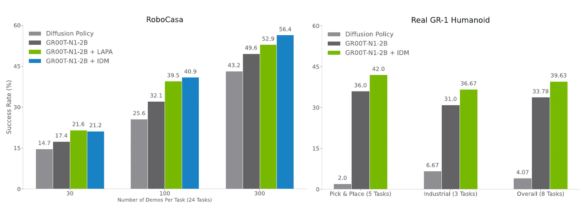
用神经轨迹后训练。RoboCasa 和真机抓放（见过的物体）、工业任务上的初步结果（图 9）：和只用真实轨迹相比，RoboCasa 在 30、100、300 条时平均分别提升 4.2、8.8、6.8 个点，GR-1 真机 8 个任务平均提升 5.8。LAPA 和 IDM 比较：30 条时 LAPA 略好，数据多了 IDM 领先越来越多；作者的解释是 IDM 训练数据多了，伪动作更接近真实动作。GR-1 真机对作者来说是“数据较多”的情形，所以只用 IDM。
RoboCasa：30 条 21.6 − 17.4 = 4.2（LAPA），100 条 40.9 − 32.1 = 8.8（IDM），300 条 56.4 − 49.6 = 6.8（IDM），所以正文的三个数每次取的都是两种标签里更好的。LAPA 和 IDM 的差：30 条 LAPA 高 0.4，100 条 IDM 高 1.4，300 条 IDM 高 3.5，和“差距变大”一致。
真机：抓放 36.0、工业 31.0（DP 2.0、6.67）和表 5 的 10% 数据“见过的物体”平均、工业平均一致。“+5.8”= 39.63 − 33.78 = 5.85，对。但“总体（8 任务）”本身按任务数加权应为 (5 × 36.0 + 3 × 31.0) / 8 = 34.13，图上是 33.78；+IDM 应为 (5 × 42.0 + 3 × 36.67) / 8 = 40.0，图上 39.63；DP 应为 3.75，图上 4.07。三个都差 0.3 到 0.4，可能“总体”是按试次而不是按任务平均的（工业里的零件装箱只做 5 次），未核实。
RoboCasa 的“Turn Sink Spout”（100 条示范）：DP 11.8%，GR00T N1 42.2%（和表 4 一致）；DP 常常弄错任务语义。作者认为微调数据很多时预训练的作用会变小。
用后训练基准里的指令“把红苹果放进篮子”提示预训练模型，并故意把苹果放在人形左手左边：预训练模型用左手抓、交给右手、再放进篮子，动作较抖（图 11）。后训练模型在这个摆法下失败，因为后训练数据全是右手、没有交接，模型失去了这个能力。
后训练后的 GR00T N1 动作明显比 Diffusion Policy 平滑，抓取更准；DP 常在开头几帧不动、抓不准（图 12）。
目前只做短时程桌面操作；以后要做长时程的移动操作，需要硬件、模型和数据都进步。更强的 VLM 骨干应能改善空间推理和语言理解。合成数据（视频生成、自动轨迹合成）在“多样、反事实、又符合物理”上仍有困难。还会探索新的模型结构和预训练策略。
机器人基础模型。一类把预训练大模型当黑盒高层规划器，配机器人专用的底层策略，前提是底层技能和接口都已有；另一类把大模型在机器人数据上微调成 VLA，端到端优化。GR00T 属后者，用 Eagle-2 当 VLM，加流匹配动作生成和动作分块。和 π0 用混合专家结构桥接 VLM 与动作模型不同，GR00T 用简单的交叉注意力，对 VLM 和动作模型的具体结构更灵活。具身专用投影器类似 Octo，但 Octo 不微调 VLM；GR00T 的投影器还支持潜在动作和 IDM 动作。
机器人学习的数据。遥操作（手机、VR 等）质量高但贵，大团队、大机队采集可到数千小时；带仪器的人类示范（手持夹爪、外骨骼、眼镜）更快但和真实机器人有差异；人类视频量大，有的用来预训练表示，有的通过中间表示和机器人数据联合训练，LAPA 表明只用人类视频的潜在动作预训练也能正迁移。GR00T 把真机、人类视频和合成数据放在一起用。
合成数据。仿真自动生成示范（MimicGen、DexMimicGen 等）便宜，但有仿真到现实的差距。以前的神经生成增强多用修补或文生图；本文用视频生成模型生成整条轨迹，规模约 30 万条、827 小时，作者说这是前所未有的。
GR00T N1 是面向通用人形机器人的开放基础模型：双系统结构、异构训练数据、支持多种具身；在仿真基准和真机 GR-1 上系统评测，显示出泛化能力和数据效率。作者希望公开的 GR00T-N1-2B、训练数据和仿真环境能推动社区进展。
核心贡献者按方向列出：模型训练（Scott Reed、Ruijie Zheng、Guanzhi Wang、Johan Bjorck、Joel Jang 等 15 人），真机和遥操作基础设施，真机实验，仿真基础设施和实验，视频生成和潜在动作（Joel Jang、Seonghyeon Ye、Zongyu Lin、Jiannan Xiang），数据，算力和开源，项目管理；产品负责人 Spencer Huang；研究负责人 Linxi “Jim” Fan、Yuke Zhu。致谢 1X 和 Fourier 团队的硬件支持，以及 Cosmos 团队等。
表 4、表 5 是仿真和真机的逐任务对比，图 10 是仿真的平均柱状图。数据越多两者都越好，GR00T 始终领先。
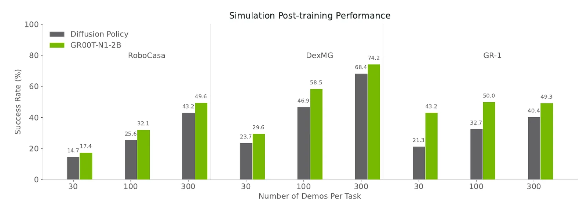
| 任务 | Diffusion Policy | GR00T-N1-2B | ||||
|---|---|---|---|---|---|---|
| 30 | 100 | 300 | 30 | 100 | 300 | |
| RoboCasa Kitchen（24 任务，PnP = 抓放） | ||||||
| Close Double Door | 1.7 | 26.5 | 60.8 | 0.0 | 43.1 | 74.5 |
| Close Drawer | 57.5 | 88.2 | 94.1 | 76.9 | 96.1 | 99.0 |
| Close Single Door | 21.7 | 46.1 | 72.6 | 49.1 | 67.7 | 83.3 |
| Coffee Press Button | 32.5 | 46.1 | 91.2 | 27.8 | 56.9 | 85.3 |
| Coffee Serve Mug | 6.7 | 28.4 | 66.7 | 3.7 | 34.3 | 72.6 |
| Coffee Setup Mug | 0.0 | 19.6 | 32.4 | 0.0 | 2.0 | 22.6 |
| Open Double Door | 0.0 | 9.8 | 18.6 | 0.0 | 12.8 | 14.7 |
| Open Drawer | 15.8 | 42.2 | 61.8 | 9.3 | 42.2 | 79.4 |
| Open Single Door | 36.7 | 42.2 | 57.8 | 20.4 | 54.9 | 58.8 |
| PnP from Cab to Counter | 2.5 | 4.9 | 9.8 | 0.9 | 3.9 | 19.6 |
| PnP from Counter to Cab | 0.0 | 2.9 | 10.8 | 1.9 | 6.9 | 36.3 |
| PnP from Counter to Microwave | 0.0 | 2.0 | 8.8 | 0.0 | 0.0 | 12.8 |
| PnP from Counter to Sink | 0.0 | 0.0 | 13.7 | 0.0 | 1.0 | 9.8 |
| PnP from Counter to Stove | 0.0 | 1.0 | 17.7 | 0.0 | 0.0 | 23.5 |
| PnP from Microwave to Counter | 0.0 | 2.0 | 11.8 | 0.0 | 0.0 | 15.7 |
| PnP from Sink to Counter | 4.2 | 8.8 | 42.2 | 0.0 | 5.9 | 33.3 |
| PnP from Stove to Counter | 1.7 | 2.9 | 23.5 | 0.0 | 0.0 | 29.4 |
| Turn Off Microwave | 63.3 | 53.9 | 52.0 | 47.2 | 57.8 | 70.6 |
| Turn Off Sink Faucet | 21.7 | 63.7 | 72.6 | 49.1 | 67.7 | 72.6 |
| Turn Off Stove | 5.0 | 10.8 | 19.6 | 4.6 | 15.7 | 26.5 |
| Turn On Microwave | 30.0 | 51.0 | 75.5 | 55.6 | 73.5 | 78.4 |
| Turn On Sink Faucet | 31.7 | 27.5 | 63.7 | 33.3 | 59.8 | 62.8 |
| Turn On Stove | 12.5 | 22.6 | 36.3 | 14.8 | 25.5 | 55.9 |
| Turn Sink Spout | 8.3 | 11.8 | 23.5 | 24.1 | 42.2 | 52.9 |
| RoboCasa 平均 | 14.7 | 25.6 | 43.2 | 17.4 | 32.1 | 49.6 |
| DexMimicGen 跨具身套件（9 任务） | ||||||
| Can Sort | 82.8 | 93.1 | 99.4 | 94.8 | 98.0 | 98.0 |
| Coffee | 35.5 | 68.1 | 79.7 | 44.9 | 79.4 | 73.5 |
| Pouring | 37.0 | 62.3 | 68.8 | 54.4 | 71.6 | 87.3 |
| Threading | 4.2 | 18.3 | 27.5 | 3.9 | 37.3 | 60.8 |
| Three Piece Assembly | 10.0 | 32.5 | 63.3 | 10.8 | 43.1 | 69.6 |
| Transport | 7.5 | 25.0 | 53.3 | 7.8 | 48.0 | 61.8 |
| Box Cleanup | 30.0 | 80.8 | 97.5 | 33.3 | 29.4 | 95.1 |
| Drawer Cleanup | 1.7 | 16.7 | 52.5 | 10.8 | 42.2 | 55.9 |
| Lift Tray | 5.0 | 25.0 | 73.3 | 5.8 | 77.5 | 65.7 |
| DexMG 平均 | 23.7 | 46.9 | 68.4 | 29.6 | 58.5 | 74.2 |
| GR-1 桌面（24 任务） | ||||||
| Cutting Board to Pot | 22.6 | 37.3 | 48.0 | 58.8 | 57.8 | 57.8 |
| Cutting Board to Basket | 19.6 | 42.2 | 29.4 | 43.1 | 61.8 | 56.9 |
| Cutting Board to Tiered Basket | 13.7 | 13.7 | 18.6 | 13.7 | 23.5 | 34.3 |
| Cutting Board to Pan | 28.4 | 48.0 | 57.8 | 67.7 | 65.7 | 68.6 |
| Cutting Board to Cardboard Box | 11.8 | 15.7 | 22.6 | 31.4 | 30.4 | 33.3 |
| Placemat to Bowl | 14.7 | 18.6 | 23.5 | 31.4 | 39.2 | 39.2 |
| Placemat to Plate | 15.7 | 23.5 | 37.3 | 33.3 | 37.3 | 49.0 |
| Placemat to Basket | 15.7 | 25.5 | 41.2 | 50.0 | 46.1 | 55.9 |
| Placemat to Tiered Shelf | 6.9 | 5.9 | 11.8 | 11.8 | 21.6 | 19.6 |
| Plate to Pan | 13.7 | 17.7 | 35.3 | 35.3 | 48.0 | 52.9 |
| Plate to Cardboard Box | 12.8 | 13.7 | 27.5 | 34.3 | 38.2 | 32.4 |
| Plate to Bowl | 15.7 | 18.6 | 31.4 | 41.2 | 42.2 | 34.3 |
| Plate to Plate | 25.5 | 39.2 | 61.8 | 72.6 | 85.3 | 68.6 |
| Tray to Tiered Shelf | 2.0 | 6.9 | 15.7 | 17.7 | 27.5 | 14.7 |
| Tray to Tiered Basket | 12.8 | 34.3 | 39.2 | 33.3 | 49.0 | 45.1 |
| Tray to Plate | 26.5 | 41.2 | 49.0 | 53.9 | 68.6 | 62.8 |
| Tray to Cardboard Box | 21.6 | 37.3 | 40.2 | 51.0 | 55.9 | 54.9 |
| Tray to Pot | 21.6 | 48.0 | 52.9 | 52.0 | 59.8 | 65.7 |
| Wine to Cabinet | 43.1 | 55.9 | 60.8 | 57.8 | 53.9 | 62.8 |
| Place Bottle to Cabinet | 40.2 | 62.8 | 60.8 | 60.8 | 81.4 | 74.5 |
| Place Milk to Microwave | 37.3 | 41.2 | 51.0 | 42.2 | 58.8 | 49.0 |
| Potato to Microwave | 17.7 | 30.4 | 41.2 | 30.4 | 26.5 | 34.3 |
| Cup to Drawer | 24.5 | 32.4 | 36.3 | 36.3 | 44.1 | 40.2 |
| Can to Drawer | 48.0 | 74.5 | 75.5 | 77.5 | 76.5 | 75.5 |
| GR-1 平均 | 21.3 | 32.7 | 40.4 | 43.2 | 50.0 | 49.3 |
逐任务平均（DP 30 / 100 / 300，GR00T 30 / 100 / 300）：RoboCasa 14.73、25.62、43.23、17.45、32.08、49.60；DexMG 23.74、46.87、68.37、29.61、58.50、74.19；GR-1 21.34、32.69、40.37、43.23、49.96、49.26。全部和平均行一致。
值得注意的是 GR00T 在 GR-1 上 300 条（49.3）比 100 条（50.0）还低，24 个任务里有 13 个 300 条不如 100 条（另 2 个持平）；DexMG 的 Box Cleanup 100 条（29.4）比 30 条（33.3）还低。论文的协议是“最后 5 个检查点取最好”，每个点 100 次试验，单任务的标准误约 ±5 个点，这类倒挂在噪声范围内。
| 任务 | Diffusion Policy | GR00T-N1-2B | ||
|---|---|---|---|---|
| 10% | 全部 | 10% | 全部 | |
| Tray to Plate | 0.0% | 20.0% | 40.0% | 100.0% |
| Cutting Board to Basket | 0.0% | 30.0% | 10.0% | 100.0% |
| Cutting Board to Pan | 0.0% | 60.0% | 60.0% | 80.0% |
| Plate to Bowl | 0.0% | 40.0% | 30.0% | 100.0% |
| Placemat to Basket | 10.0% | 60.0% | 40.0% | 80.0% |
| 抓放·见过的物体 平均 | 2.0% | 42.0% | 36.0% | 92.0% |
| Tray to Plate | 0.0% | 20.0% | 30.0% | 80.0% |
| Cutting Board to Basket | 10.0% | 20.0% | 60.0% | 60.0% |
| Cutting Board to Pan | 0.0% | 40.0% | 40.0% | 80.0% |
| Plate to Bowl | 0.0% | 20.0% | 10.0% | 40.0% |
| Placemat to Basket | 10.0% | 50.0% | 30.0% | 100.0% |
| 抓放·没见过的物体 平均 | 4.0% | 30.0% | 34.0% | 72.0% |
| 抓放 平均 | 3.0% | 36.0% | 35.0% | 82.0% |
| White Drawer | 6.6% | 36.4% | 26.4% | 79.9% |
| Dark Cabinet | 0.0% | 46.2% | 86.6% | 69.7% |
| Wooden Chest | 36.4% | 33.2% | 72.9% | 63.2% |
| 铰接 平均 | 14.3% | 38.6% | 62.0% | 70.9% |
| Machinery Packing | 20.0% | 44.0% | 8.0% | 56.0% |
| Mesh Cup Pouring | 0.0% | 62.5% | 65.0% | 67.5% |
| Cylinder Handover | 0.0% | 76.5% | 20.0% | 86.6% |
| 工业 平均 | 6.7% | 61.0% | 31.0% | 70.0% |
| Coordination Part 1 | 45.0% | 65.0% | 70.0% | 80.0% |
| Coordination Part 2 | 10.0% | 60.0% | 30.0% | 85.0% |
| 协作 平均 | 27.5% | 62.5% | 50.0% | 82.5% |
| 平均 | 10.2% | 46.4% | 42.6% | 76.8% |
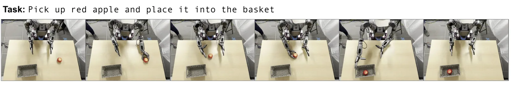
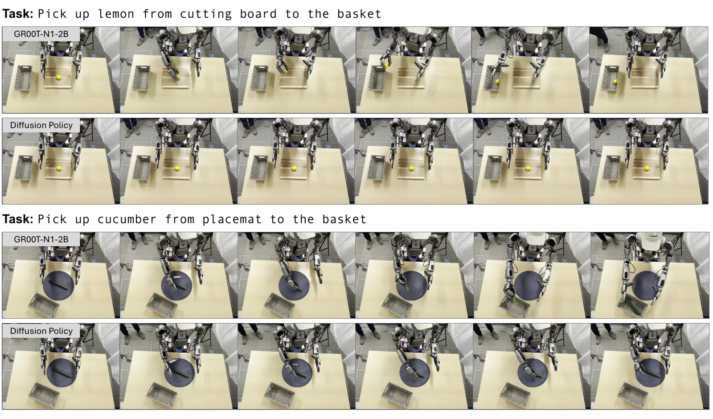
原图注说“上：黄瓜放进篮子，DP 抓不准；下：柠檬从砧板放进锅，DP 卡住”。图里的顺序正相反：上面一组标题是“Pick up lemon from cutting board to the basket”，下面是“Pick up cucumber from placemat to the basket”；柠檬的目标在图标题里是篮子，图注写的是锅（pan）。
预训练和后训练大多数超参相同；后训练用更小的 batch 防止数据少时过拟合。
| 表 6 · 超参数 | 预训练 | 后训练 |
|---|---|---|
| 学习率 | 1e-4 | |
| 优化器 | AdamW，β₁ 0.95，β₂ 0.999，ε 1e-8 | |
| 权重衰减 | 1e-5 | |
| 学习率调度 | 余弦，warmup 比例 0.05 | |
| Batch | 16,384 | 128 或 1024 |
| 梯度步数 | 200,000 | 20,000 – 60,000 |
| 骨干视觉编码器 | 训练 | |
| 骨干文本部分 | 冻结 | |
| DiT | 训练 | |
E.1 数据格式。基于 Hugging Face 的 LeRobot 数据格式：状态、动作和元数据存 parquet；图像存 MP4（或 PNG 序列），parquet 里存引用；统计和索引存 JSON。每帧是同步的观测和动作对（observation.images.*、observation.state、动作）。为跨具身训练加了四个约束：meta 目录必须有 modality.json，说明状态和动作向量每一维的语义；把状态和动作拆成有语义的字段（末端位置、朝向、夹爪等），各带数据类型、范围和变换说明；支持多种标注（任务描述、有效性、成功标志），沿用 LeRobot“parquet 存索引、JSON 存内容”的做法；显式声明旋转表示（四元数、欧拉角、轴角）。好处是语义清楚、可以按字段归一化和增广、便于校验、和 LeRobot 生态向后兼容。
E.2 统一动作空间。尽量统一各数据集的状态和动作：状态里的末端旋转转成 6D 表示（避免欧拉角的奇异和不连续）；动作里的末端旋转用轴角；关节状态、关节动作、末端位置和末端动作做 min-max 归一化；顺序统一为“末端旋转、末端位置、夹爪开合”，从左臂到右臂。
n1-release 的示例数据 demo_data/robot_sim.PickNPlace/meta/modality.json 是 GR-1 全身 44 维：左臂 7、左手 6、左腿 6、脖子 3、右臂 7、右手 6、右腿 6、腰 3。默认数据配置 Gr1ArmsOnlyDataConfig 只取双臂双手：7 + 7 + 6 + 6 = 26 维，动作 min-max 归一化，补零到 32 维（max_action_dim）。状态额外做了 StateActionSinCosTransform（每个关节角变成 sin 和 cos 两个数，26 → 52，补零到 64 维 max_state_dim），这一步论文没有提。图像中心裁 95% 再缩到 224 × 224，只用 1 帧观测（observation_indices = [0]），动作 16 步。
辅助目标检测损失。为了增强空间理解，训练时加一个辅助任务：根据语言指令定位目标物体。用 OWL-v2 检测器给轨迹片段的每一帧标出目标物体的框，取框中心并按图宽高归一化得到 \(x_{gt}\)；在最终视觉语言 token 上接一个线性层预测二维坐标，平方损失 \(\mathcal L_{\rm det}=\|x_{\rm pred}-x_{gt}\|^2\)，总损失 \(\mathcal L=\mathcal L_{\rm fm}+\mathcal L_{\rm det}\)（无编号）。
GR00T-N1-2B 的文件头里有 action_head.decode_layer.weight [2, 1536] 和 bias [2]，共 3,074 个参数：输入 1536 维、输出 2 维，正好是“线性层预测二维坐标”。它挂在 action_head 下，输入宽度是投影后的视觉语言维度（1536）。配置里有 freeze_decode_layer、load_pretrained_det_decode_layer_path 两个键，但 n1-release 的 Python 代码里没有任何地方用到 decode_layer，推理时不计算它。具体取哪些 token、怎样池化，无法核对，未核实。
神经轨迹生成。用 LoRA 在遥操作轨迹上微调 WAN2.1-I2V-14B（见本站 Wan 精读），轨迹均匀下采样到 81 帧、480P。为保证质量，每段生成视频取 8 帧，问商用多模态大模型是否符合指令；不符合的重新写描述，此时视频下采样到 16 帧、256P。
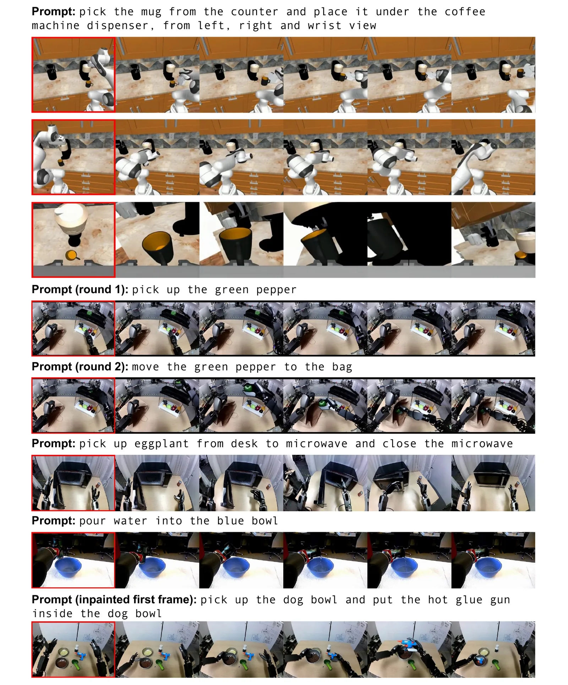
IDM 训练。IDM 以轨迹里的两帧（当前帧和未来帧）为条件，生成两帧之间的动作块。初步实验发现加状态或更多帧对验证集上的动作预测帮助不大。结构用 System 1 的 DiT 加 SigLIP-2 视觉嵌入，流匹配训练；每个具身训练 3 万或 6 万步，看数据量。训练后对神经轨迹的每一步用两帧（动作长度和训练时相同）打伪标签。
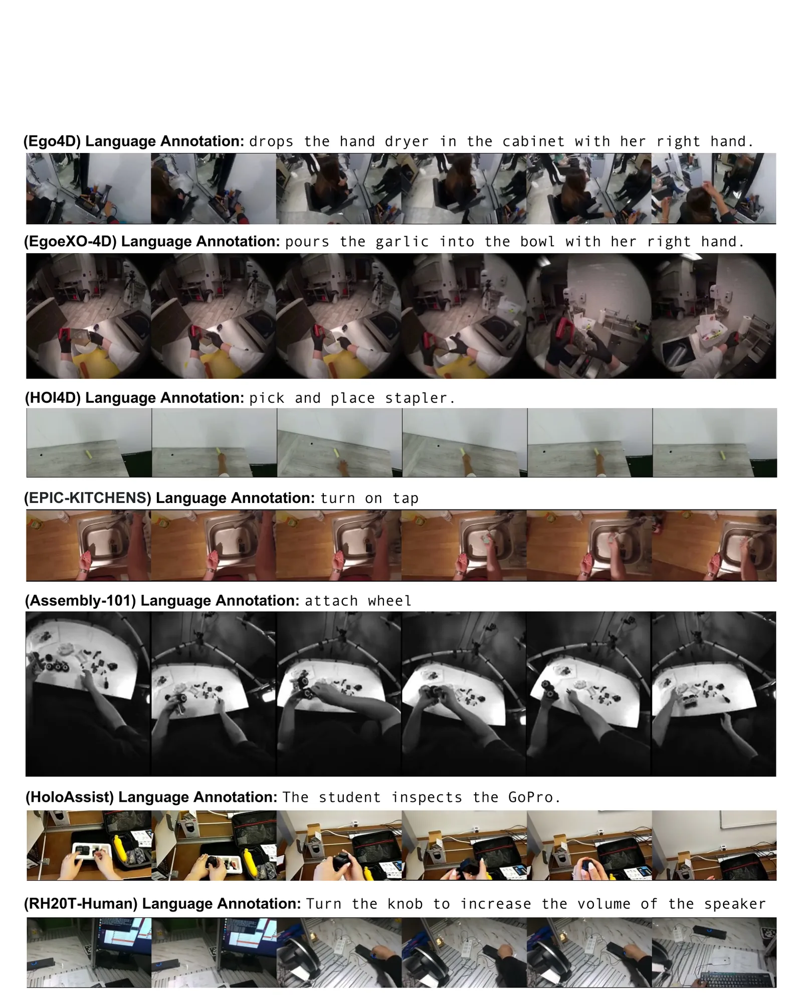
对照的是 n1-release（755876a）和 GR00T-N1-2B 的 config.json、文件头。仓库只有微调和推理；预训练的数据混合、LAPA、IDM、视频生成、检测损失都没有代码。
| 项目 | 论文 | 代码 / HF 配置 |
|---|---|---|
| VLM | Eagle-2（SmolLM2 + SigLIP-2），第 12 层 | 本地 eagle2_hg_model，select_layer 12（删掉 12 层以后的层），template qwen2-chat，词表 49,164 |
| 图像 | 224 × 224，每帧 64 token | num_image_token 64，max_input_tiles 1；裁 95% 后缩放到 224 |
| VLM 输出 | 未给维度 | 2048 → backbone.linear → 1536 |
| 冻结 | 只冻结语言部分 | tune_llm false，tune_visual true，投影器和 DiT 训练 |
| DiT | 交替交叉 / 自注意力，adaLN | 16 块，32 头 × 48 = 1536 宽，interleave_self_attention：偶数块交叉、奇数块自注意力，各 8 块；FFN 6144，GELU；dropout 0.2 |
| DiT 的序列 | 状态 + 带噪动作 | 1 个状态 token + 16 个动作 token（动作 token 加可学位置编码），交叉注意力块只看 VL token |
| 编解码器 | 每具身一个 MLP | 状态 2 层 MLP（64 → 1024 → 1536）；动作编码器 3 层，第 2 层拼接正弦时间编码；解码器 2 层（1024 → 1024 → 32）；32 个槽位 |
| 维度上限 | 未给 | 状态 64，动作 32，动作块 16 |
| 流匹配 | 目标 \(\epsilon-A\)（读者注 4） | velocity = actions - noise |
| 时间分布 | Beta((s − τ)/s; 1.5, 1)，s = 0.999 | 同；τ × 1000 取整成桶 |
| 推理步数 | K = 4 | 配置 16，脚本 --denoising_steps 默认 4（读者注 5） |
| 交叉注意力的填充掩码 | 未提 | DiT 调用时 attention_mask=None，块内 encoder_attention_mask 一行被注释掉：交叉注意力会看到填充的 VL token |
| 微调默认 | 表 6：lr 1e-4，wd 1e-5，warmup 0.05 | gr00t_finetune.py 同；batch 16、1 万步；可选 LoRA（rank 默认 0） |
cross_attention_dit.py 的 DiT.forward 对每个块都传 attention_mask=None，BasicTransformerBlock 里本该传 encoder_attention_mask 的那行被注释掉了。同一 batch 里提示词长短不一时，短的那条会补齐，补的 token 也参与交叉注意力，所以一条观测的动作会随同 batch 里别的样本的提示长度略有变化。当前 main 的 README 为此加了 --strict_vl_padding_mask，说这对发布的检查点约占动作幅度的 2%（N1.7 动作头上测的），默认关闭以保持旧行为。N1 上的影响大小我没测，未核实；单条推理（batch 1）不受影响。
N1 之后的三个版本都没有正式论文。下面依据 Isaac-GR00T 各版本的 README（n1.5-release、n1.6-release、main）、HF 模型卡和 config.json、权重文件头，以及 NVIDIA GEAR 的研究博客（N1.5，2025-06-11、N1.6，2025-12-15）整理。N1.7 没有找到研究博客（research.nvidia.com/labs/gear/gr00t-n1_7/ 返回 403）。每格后面的方括号是出处：[R] README，[C] HF config.json，[W] 权重文件头，[B] 博客，[M] 模型卡。
| 项目 | N1（2025-03） | N1.5（2025-06） | N1.6（2025-12） | N1.7（2026-04 EA，之后 GA） |
|---|---|---|---|---|
| HF 检查点 | GR00T-N1-2B | GR00T-N1.5-3B | GR00T-N1.6-3B | GR00T-N1.7-3B |
| 参数量（文件头） | 2,190,019,826 [W] | 2,724,163,520 [W] | 3,286,608,832 [W] | 3,455,180,928，其中 lm_head 311,164,928；不计它 3,144,016,000，和 index 的 total_parameters 一致 [W] |
| VLM 骨干 | Eagle-2：SmolLM2 + SigLIP-2 [论文] | Eagle 2.5，针对定位和物理理解调过 [R][B]；路径名 eagle_er-qwen3_1_7B-Siglip2_400M [C] | 博客：内部 Cosmos-2B 变体；README：内部 Cosmos-Reason-2B 变体 [B][R]；config：nvidia/Eagle-Block2A-2B-v2 [C]（读者注 23） | Cosmos-Reason2-2B（Qwen3-VL 结构），支持原生分辨率和宽高比 [R][M][C] |
| 取 LLM 第几层 | 12 [C] | 12 [C]（文件头 12 层） | 16 [C]（文件头 16 层） | config 16，文件头 16 层；README 说 16 → 12（读者注 22） |
| VLM 是否冻结 | 语言冻结，视觉训练 [论文][C] | 整个 VLM 冻结（预训练和微调）[R][B]；但 config 写 tune_visual: true（读者注 24） | 解冻 VLM 最上面 4 层（预训练）[R][B]；tune_top_llm_layers 4 [C] | 代码默认 tune_top_llm_layers 0、VLM 冻结 [R]；base 检查点 config 写 tune_llm/tune_visual true，未核实预训练实际设置 |
| VLM 和 DiT 之间 | 线性投影 2048 → 1536 | 简化的 MLP 连接器并加 LayerNorm [R][B]；另加 4 层自注意力适配器 vl_self_attention [C][W] | 去掉 4 层适配器 [R][B]（文件头里没有） | 4 层 vl_self_attention 又出现在 config 和文件头 [C][W]，README 没提 |
| DiT 层数 | 16 [C] | 16 [C] | 32（“2 倍大”）[R][B][C] | config 和文件头 32；README 说 32 → 16（读者注 22） |
| DiT 交叉注意力 | 每个交叉块看全部 VL token | 同 N1 | AlternateVLDiT：交叉块轮流只看文本 token 或只看图像 token [C][代码] | 同 N1.6 [C][代码] |
| 动作块 / 维度 | 16 / 32，状态 64 [C] | 16 / 32，状态 64 [C] | 50 / 128，状态 128 [C]；README 说 16（读者注 22） | 40 / 132，状态 132 [R][C] |
| 动作表示 | 多为绝对关节或末端 | 同 N1；新增 OXE_DROID（末端）和 AGIBOT_GENIE1 两个预训练头 [R] | 多数具身改为相对当前状态的动作块 [R][B] | 机器人和人类共享相对末端动作空间 [R] |
| 去噪步数 | 4（脚本） | 4 [C] | 4 [C] | 4 [C][M] |
| 额外目标 | 辅助检测损失 [论文附录 F] | FLARE（未来潜在表示对齐），系数 0.2 [B]；权重里有 32 个 future_tokens，公开代码注释“not using flare now”（读者注 24） | 模型卡沿用“流匹配 + 世界建模目标”的说法 [M]，具体未核实 | 未核实 |
| 预训练数据 | 表 7：8,376 小时 | 内部 GR-1、OXE、仿真 GR-1（DexMG）、DreamGen 神经轨迹、AgiBot-Beta [B] | N1.5 数据之外加数千小时遥操作：双臂 YAM、AgiBot Genie1、BEHAVIOR 上的仿真 Galaxea R1 Pro、Unitree G1 全身移动操作 [R][B] | 加入 2 万小时 EgoScale 人类视频 [R]；模型卡：21.6M 个数据点、13 个数据集 [M] |
| 预训练规模 | batch 16,384，20 万步，约 5 万 H100 小时 | batch 16,384，25 万步，1K 张 H100 [B] | batch 16,384，30 万步 [B] | 模型卡能耗估算按 64 个 GB200 节点 × 4 卡 × 120 小时 [M] |
| 权重许可 | NVIDIA 单向非商业 [M] | 同左 [M] | 同左 [M] | NVIDIA Open Model License（可商用）[R][M] |
各版本自己报的基准分数（都是官方 README 或博客，测法各不相同，不能直接横比）：
| 基准 | N1 | N1.5 | N1.6 | N1.7 |
|---|---|---|---|---|
| RoboCasa（Panda，24 任务） | 每任务 30 / 100 / 300 条：17.4 / 32.1 / 49.6 [论文表 4] | 30 条：47.5（博客里 N1 同设定 17.4）[B] | 66.22%（README 标 base 检查点）[R] | 70.8%（微调）[R main] |
| RoboCasa-GR1 桌面（24 任务） | 30 / 100 / 300 条：43.2 / 50.0 / 49.3 [论文表 4] | 0-shot 43.9（N1 39.6），30 条 47.4（N1 43.2）[B]；README 微调（24k 条）0.48，每任务 50 次 [R n1.5] | 47.6%（base 检查点，24 任务逐项平均 47.61）[R n1.6] | 44.5%（微调，8 步动作，每任务 20 次，逐项平均 44.51）[R main] |
| LIBERO（Spatial / Goal / Object / Long） | – | 92 / 86 / 92 / 76（各 50 次），LIBERO-90 89.3 [R n1.5] | 97.65 / 97.5 / 98.45 / 94.35 [R n1.6] | README 表和 N1.6 完全相同 [R main]（读者注 25） |
| SimplerEnv Bridge / Fractal | – | 63% / 41% [R n1.5] | n1.6-release README：62.07% / 67.66%；main README：56.6% / 52.0%（读者注 26） | 62.3% / 72.5% [R main] |
| 真机 GR-1 语言跟随 | 46.6%，总成功 43.3% [B] | 93.3%，总成功 83.0% [B] | – | – |
| 其他 | – | 新物体 0-shot 15.0%（N1 0%），加人类视频 FLARE 后训练 55.0%；DreamGen 12 个新动词 38.3%（N1 13.1%）；Unitree G1 1K 示范 98.8%（N1 44.0%）[B] | BEHAVIOR-1K：README 平均 26.30% / 11.30%（两列口径未细读）[R n1.6] | 推理（模型卡，4 步、1 路相机）：H100 TensorRT 全流程 27.9 ms（35.9 Hz），Jetson AGX Thor 93.8 ms（10.7 Hz）[M]；README 另写 RTX PRO 6000 约 40 Hz、Thor 约 28 Hz（LIBERO，batch 1）[R]，两处测法不同，未核实 |
N1.5 博客的“RoboCasa，每任务 30 条”给 N1 17.4，“Sim GR-1，30 条”给 N1 43.2，正好是本文表 4 的两个平均。所以博客的 N1.5 数（47.5、47.4）是按本文协议测的，可以和表 4 直接比：RoboCasa 30 条从 17.4 涨到 47.5，GR-1 30 条只从 43.2 涨到 47.4。
main README 的“Detailed changes from N1.6”说：select_layer 16 → 12，扩散层 32 → 16，动作块 16 → 40，状态动作维度 29 → 132。核对：
nvidia/GR00T-N1.7-3B 的 config 是 num_layers: 32、select_layer: 16；文件头里 DiT 块编号 0 到 31（32 块），语言模型层 0 到 15（16 层）。所以发布的 N1.7 base 检查点是 32 层 DiT、取第 16 层，和 README 相反。gr00t/configs/model/gr00t_n1d7.py 的默认值确实是 16 层、select_layer 12。from_pretrained 时检查点的 config 覆盖默认值，所以 README 描述的是代码默认，不是检查点。action_horizon 50、max_action_dim 128，不是 README 说的 16 和 29。“29”是 GR1 仿真基准的状态维度（双臂 14 + 双手 12 + 腰 3），可能指 GR1 具身而不是模型上限，未核实。四处说法：N1.6 博客“internal NVIDIA Cosmos-2B VLM variant”；n1.6-release README“internal NVIDIA Cosmos-Reason-2B VLM variant”；N1.6-3B 的 config model_name: nvidia/Eagle-Block2A-2B-v2、backbone_model_type: eagle；main README 说 N1.7 “replacing the Eagle backbone used in N1.6”。文件头：语言模型 16 层，词表 151,680 × 2048 和 N1.5 相同；视觉编码器 427,680,704 个参数，也和 N1.5 的完全相同。我的理解是 N1.6 的 VLM 代码上走 Eagle 的结构、训练数据来自 Cosmos-Reason 的配方，但这只是推断，未核实。
N1.5 README 和博客都说 VLM 在预训练和微调中冻结，但 N1.5-3B 的 config 写 tune_visual: true（N1.5 微调脚本默认 tune_visual = False）。config 记录的可能是别的阶段的设置，未核实。
FLARE：权重里有 action_head.future_tokens（32 × 1536 = 49,152 个参数，对应 num_target_vision_tokens 32），代码会把它们拼进 DiT 的序列（状态、未来 token、动作），但 flow_matching_action_head.py 里写着 return_all_hidden_states=False # NOTE (YL): not using flare now，没有对齐损失。所以公开代码微调 N1.5 时 FLARE 不生效，只是多了 32 个可学 token。
N1.6 和 main（N1.7）README 的 LIBERO 表完全相同：Spatial 195/200（97.65%）、Goal 195/200（97.5%）、Object 197/200（98.45%）、10（Long）189/200（94.35%）。按分数算 195/200 = 97.5%，197/200 = 98.5%，189/200 = 94.5%，只有 Goal 对得上；97.65、98.45、94.35 可能是多次评测的平均，和“/200”不是同一组数。OpenWAM 表 13 的 GR00T-N1.6 行（97.7、98.5、97.5、94.4，平均 97.0）就是这组百分比四舍五入，平均 (97.65 + 98.45 + 97.5 + 94.35) / 4 = 96.99。N1.7 是否重新测过 LIBERO，README 没说，未核实。
n1.6-release README：Bridge 62.07%、Fractal 67.66%；当前 main README 的 N1.6 列：Bridge 56.6%、Fractal 52.0%（每个任务 100 次左右，逐项列出）。差别最大的是 Fractal 的 open drawer（main 里 N1.6 0/100）。哪一次是重测、用的什么设置，README 没说，未核实。比较 N1.6 和 N1.7 时，main README 用的是较低的那组。
第三方：单步动作头。arXiv 2609.18108（Xihe Shao，2026-09，CC BY 4.0）是一篇技术报告，把 N1.7 的多步 DiT 动作头换成单步 “drifting” 动作头。摘要给的数：LIBERO 上动作头前向从约 45.3 ms 降到 5.0 ms，骨干加动作头从 70.0 ms 降到 30.6 ms，但成功率明显下降（三个种子：Spatial 64.0 ± 4.0%、Goal 52.0 ± 1.0%、Long 26.0 ± 2.6%），作者自己把它定位为“速度换成功率”。本页没有精读这篇。
OpenWAM 在两处用到 GR00T：一是它的 8 个仿真基准之一 RoboCasa-GR1 来自本文；二是 GR00T N1.5 / N1.6 / N1.7 作为 VLA 基线出现在附录 D 的表里。
gr1_unified/*_GR1ArmsAndWaistFourierHands_Env：18 个 PosttrainPnPNovelFrom…SplitA 重排任务加 6 个“放进柜子 / 抽屉 / 微波炉再关上”，和本文 §4.1 的 18 + 6 一一对应（OpenWAM 代码 benchmarks/robocasa_gr1/README.md，每回合最多 720 步）。configs/dataloader/robocasa_gr1.yaml）。客户端在线用正运动学把 29 维关节状态转成 EEF33，把模型输出的 EEF33 用逆运动学解回 7 + 7 个手臂关节，手和腰直接透传（benchmarks/robocasa_gr1/policy_config.yml 的注释）。33 维散射进 OpenWAM 80 维统一动作空间的 0–8、10–15、34–42、44–49、68–70 槽，夹爪槽 9 和 43 空着，见 OpenWAM 的槽位图。| OpenWAM 表 | 基准 | GR00T 行 | 分数 | 能否在 Isaac-GR00T 找到 |
|---|---|---|---|---|
| 表 13 | LIBERO（Spatial / Object / Goal / Long / Avg） | N1.6 | 97.7 / 98.5 / 97.5 / 94.4 / 97.0 | 能：n1.6 README 的百分比四舍五入（读者注 25） |
| 表 15 | RoboTwin2.0-Clean2Random（Clean / Randomized / Avg） | N1.7 | 43.6 / 20.7 / 32.2 | README 没有 RoboTwin，未核实 |
| 表 19 | RoboCasa365（Atomic / Comp.-Seen / Comp.-Unseen / Avg） | N1.5 | 50.7 / 14.8 / 2.7 / 23.9 | README 没有 RoboCasa365，未核实（可能来自 RoboCasa365 原文） |
| 表 20 | RoboCasa-GR1 | N1.5 | 48.0 | 能：n1.5-release examples/RoboCasa/README.md 平均 0.48（24 任务逐项平均 0.482，每任务 50 次） |
| 表 20 | RoboCasa-GR1 | N1.6 | 49.9 | 不能：n1.6 README 是 47.6%（逐项平均 47.61）；未核实 |
OpenWAM-α 在 RoboCasa-GR1 上是 60.5，比表里的 GR00T N1.5 高 12.5、比 N1.6 高 10.6。作为参照：本文 N1 在每任务 100 条示范时是 50.0（表 4），N1.7 README 的微调结果是 44.5。这些数的训练数据量、动作空间和试验次数都不同，只能当大致的量级参照。
另外两个间接联系：本文的神经轨迹用 WAN2.1-I2V-14B 生成（附录 F），和 OpenWAM 的视频骨干是同一系列（Wan 精读）；N1.6 / N1.7 的 VLM 走向 Cosmos-Reason（Cosmos-Reason1 精读），而 OpenWAM 也支持 Cosmos-Predict2.5 和 Cosmos 3 当视频骨干（Cosmos-Predict2.5、Cosmos 3）。GR00T 是“VLM + 动作头”的 VLA，OpenWAM 是“视频模型 + 动作头”的 WAM，两者的动作头都是流匹配 DiT，最大的区别是条件来自语言模型的中间层还是视频生成模型。
不是两个独立训练的网络。按代码，它们是一个 GR00T_N1 模型里的 backbone 和 action_head，一次前向里依次算：VLM 把图像和指令算到第 12 层，输出一串 token；动作头拿这串 token 当交叉注意力的键值，跑 4 次去噪。训练时一个损失（流匹配），梯度从动作头传回 VLM 的视觉编码器（语言部分冻结）。“系统 1 / 系统 2”的说法主要是对分工的比喻；论文说的 10 Hz 和 120 Hz 两种频率，在公开代码里没有对应的异步实现（读者注 6）。
先看协议是否一致。本文表 4 是关节空间、每任务 30 / 100 / 300 条示范、100 次试验、最后 5 个检查点取最好；N1.5 README 是用 24k 条（每任务 1000 条）微调、每任务 50 次；N1.6 README 是 base 检查点直接评（GR1 在 N1.6 的预训练具身里）；N1.7 README 是微调、每任务 20 次、执行 8 步动作。要和 OpenWAM 那样的“全量数据微调”比，最接近的是 N1.5 README 的 48.2（逐项平均）或 N1.7 的 44.5；本文的 49.3（300 条）也可以，但动作空间不同。OpenWAM 表里 N1.6 的 49.9 我找不到出处（见上表）。
以下各条都是本页加的核算或对照，不属于论文内容。按编号排列，点编号跳到对应位置。
decode_layer，代码不用它。encoder_attention_mask 被注释掉。和 OpenWAM 页的对照（不一致处）：OpenWAM 表 20 里 GR00T-N1.6 的 49.9 和 Isaac-GR00T N1.6 README 的 47.6 不一致；N1.5 的 48.0 能对上。OpenWAM 页 #act-tool 写的 RoboCasa-GR1 槽位（0–8、10–15、34–42、44–49、68–70）和 OpenWAM 代码一致。
论文没写、我也没找到的：预训练各数据源的采样权重；LAPA 的窗口 \(H\)、码本大小；IDM 的动作长度；检测损失取哪些 token；120 Hz 的来历；N1.6 / N1.7 的训练细节（除博客里的步数和 batch）。
文中提到的数据集、基准、代码和权重。链接在 2026 年 11 月 16 日用脚本检查过，除注明的以外都返回 200。
| 名称 | 是什么 | 主页 | 论文 |
|---|---|---|---|
| Isaac-GR00T | 本文代码（Apache-2.0） | HF GR00T-N1-2B | 2503.14734 |
| GR00T X-Embodiment-Sim | 公开的仿真训练数据 | huggingface.co/datasets/nvidia | 本文 |
| RoboCasa | 厨房仿真框架和 24 个原子任务 | robocasa.ai | 2406.02523 |
| DexMimicGen | 双臂灵巧手数据生成和 9 任务基准 | dexmimicgen.github.io | 2410.24185 |
| RoboCasa-GR1 桌面任务 | 本文的 GR-1 24 任务基准 | github.com/robocasa | 2503.14734 |
| Open X-Embodiment | 跨具身真机数据集合 | robotics-transformer-x.github.io | 2310.08864 |
| DROID | OXE 子集 | droid-dataset.github.io | 2403.12945 |
| RT-1 | OXE 子集 | robotics-transformer1.github.io | 2212.06817 |
| Bridge-v2 | OXE 子集；SimplerEnv Bridge | rail-berkeley.github.io/bridgedata | 2308.12952 |
| Language Table | OXE 子集 | interactive-language.github.io | 2210.06407 |
| MUTEX | OXE 子集 | ut-austin-rpl.github.io/MUTEX | 2309.14320 |
| RoboSet | OXE 子集 | robopen.github.io/roboset | 2309.01918 |
| Plex | OXE 子集 | microsoft.github.io/PLEX | 2303.08789 |
| AgiBot World | AgiBot-Alpha 真机数据 | agibot-world.com | 2503.06669 |
| RH20T | 真机和人类部分都用了 | rh20t.github.io | 2307.00595 |
| Ego4D | 人类第一视角视频 | ego4d-data.org | 2110.07058 |
| Ego-Exo4D | 第一 + 第三视角 | ego-exo4d-data.org | 2311.18259 |
| Assembly-101 | 组装视频 | assembly-101.github.io | 2203.14712 |
| EPIC-KITCHENS | 厨房第一视角 | epic-kitchens.github.io | 1804.02748 |
| HOI4D | 手物交互 4D | hoi4d.github.io | 2203.01577 |
| HoloAssist | AR 协作任务 | holoassist.github.io | 2309.17024 |
| LeRobot | 数据格式基础 | github.com/huggingface/lerobot | — |
| LIBERO | N1.5 以后的 README 基准 | libero-project.github.io | 2306.03310 |
| SimplerEnv | N1.5 以后的 README 基准 | simpler-env.github.io | 2405.05941 |
| GR00T N1.5 博客 | N1.5 结构、数据和结果 | research.nvidia.com/labs/gear | 无论文 |
| GR00T N1.6 博客 | N1.6 结构和数据 | research.nvidia.com/labs/gear | 无论文 |
| FLARE | N1.5 的未来潜在对齐目标 | research.nvidia.com/labs/gear/flare | 2505.15659 |
| GR00T-N1.7-3B | N1.7 base 权重 | huggingface.co/nvidia | 无论文；第三方 2609.18108 |